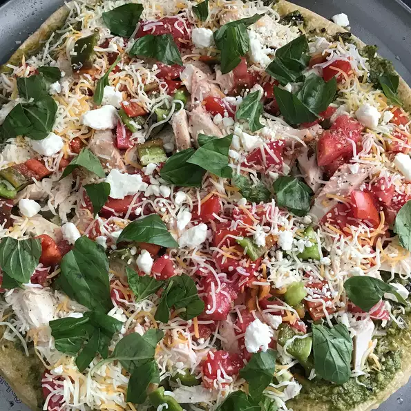

Pizza

A delicious homemade Pesto Pizza recipe
This recipe is a family favorite in my home. It is one of the most delectable Pesto Pizzas I have ever eaten.
It is fantastic, and yes I need to drag this out to make it an actual paragraph.
Ingredients:
- 1 (12 inch) pre-baked pizza crust
- 1/2 cup pesto
- 1 ripe tomato, chopped
- 1/2 cup green bell pepper, chopped
- 1 (2 ounce) can chopped black olives, drained
- 1/2 small red onion, chopped
- 1 (4 ounce) can artichoke hearts, drained and sliced
- 1 cup crumbled feta cheese
Steps:
- Preheat oven to 450 degrees F (230 degrees C).
- Spread pesto on pizza crust. Top with tomatoes, bell peppers, olives, red onions, artichoke hearts, and feta cheese.
- Bake for 8 to 10 minutes, or until cheese is melted and browned.